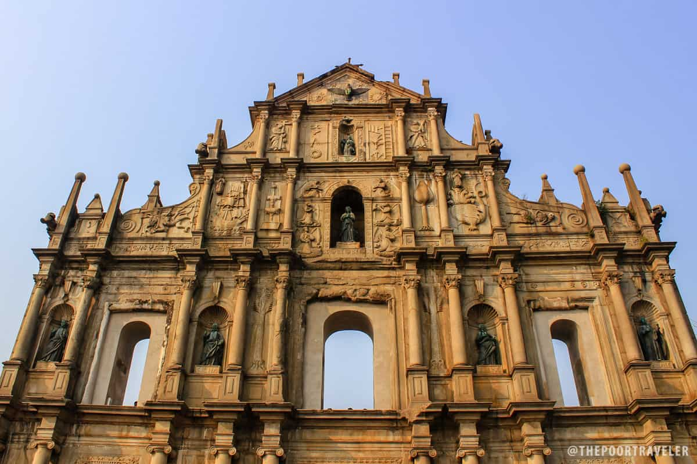
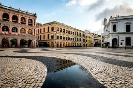
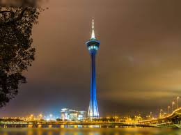

Discover Macau's Must-See Attractions
From the grandeur of its casinos to the tranquility of its temples, Macau offers a diverse range of experiences for every traveler.
Ruins of St. Paul's
The iconic facade of what was once the Church of Mater Dei, a 17th-century Jesuit church.
Senado Square
A beautiful paved town square and part of the UNESCO Historic Centre of Macau.
Macau Tower
A towering landmark offering panoramic views, revolving restaurants, and thrilling activities like bungee jumping.